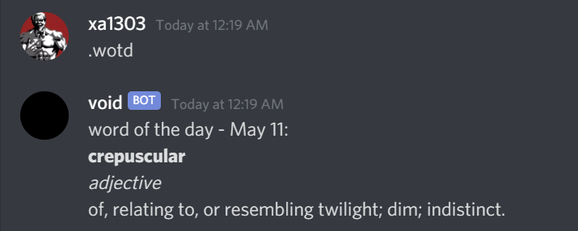

Projects
[Javascript] Discordbot: word of the day
Usage: .wotd
This command gets dictionary.com's word of the day.

Code:
const needle = require("needle");
const cheerio = require("cheerio");
module.exports = {
do: async (msg) => {
try {
const request = await needle("get", "https://www.dictionary.com/e/word-of-the-day/");
const $ = cheerio.load(request.body);
const wotd = $("html").find("div[data-is-latest-post='true']").find("div.wotd-item-headword__word h1").text();
const wotdTerm = $("html").find("div[data-is-latest-post='true']").find("div.wotd-item-headword__pos-blocks p:not(:last-child)").text().replace(/\s +/g, "")
const wotdMeaning = $("html").find("div[data-is-latest-post='true']").find("div.wotd-item-headword__pos-blocks p:last-child").text();
msg.channel.createMessage(`word of the day:\n\*\*${wotd}\*\*\n\*${wotdTerm}\*\n${wotdMeaning}`);
}
catch(err) {
msg.channel.createMessage("There was a problem!");
}
}
}
[Python] Caesar Cipher: encoding and decoding
To decode or encode?
This asks whether the user wants to encode or decode a message. The user is prompted with Do you want to encode(e) or decode(d)?
The user can enter e if he wants to encode a message, or d if he wants to decode a message. Casing doesn't matter.
while True:
choice = input('Do you want to encode(e) or decode(d)? ')
if choice.lower() == 'e':
msg = str(input('Message to encode: '))
print(f'Encoded message: {encode(msg)}')
break
elif choice.lower() == 'd':
msg = str(input('Message to decode: '))
for key in range(26):
print(f'Key: {key:<2} Decoded message: {decode(msg, key)}')
break
To encode
The user enters e. The user is prompted with Key? He can enter any integer. He chooses 16.
Next he is prompted with Message to encode: and enters Hello world, which is then stored in
the msg variable. The encode(msg) function is called.
$ py Caesar.py
Do you want to encode(e) or decode(d)? e
Message to encode: Hello world
Key? 16
Encoded message: Xubbe mehbt
Encode function
def encode(msg):
encoded = []
# Checks for invalid key inputs
while True:
try:
key = int(input('key? '))
key %= 26
break
except:
pass
for c in msg:
if c.isupper():
encoded_c = string.ascii_uppercase.index(c) + key
if encoded_c > 25:
encoded_c -= 26
encoded.append(string.ascii_uppercase[encoded_c])
elif c.islower():
encoded_c = string.ascii_lowercase.index(c) + key
if encoded_c > 25:
encoded_c -= 26
encoded.append(string.ascii_lowercase[encoded_c])
else:
encoded.append(c)
return ''.join(encoded)
To decode
The user enters d. The decode(self) method is called. The user is prompted with Message to decode: . He enters Hello world.
Next he is prompted with Message to encode: and enters Xubbe mehbt. A list of all possible
decrypted messages is printed.
$ py Caesar.py
Do you want to encode(e) or decode(d)? d
Message to decode: Xubbe mehbt
...
Key: 14 Decoded message: Jgnnq yqtnf
Key: 15 Decoded message: Ifmmp xpsme
Key: 16 Decoded message: Hello world
Key: 17 Decoded message: Gdkkn vnqkc
Key: 18 Decoded message: Fcjjm umpjb
...
Decode function:
def decode(msg, key):
decoded = []
for c in msg:
if c.isupper():
decoded_c = string.ascii_uppercase.index(c) - key
if decoded_c < 0:
decoded_c += 26
decoded.append(string.ascii_uppercase[decoded_c])
elif c.islower():
decoded_c = string.ascii_lowercase.index(c) - key
if decoded_c < 0:
decoded_c += 26
decoded.append(string.ascii_lowercase[decoded_c])
else:
decoded.append(c)
return ''.join(decoded)
[Python] Prime factors
Finding prime factors
This programs finds the prime factors of a positive integer.
def primeFactorsOf(num):
factors = []
for n in range(2,num+1):
isPrime = True
for i in range(2,n+1):
if n % i == 0 and n != 2:
isPrime = False
while isPrime:
if num % n == 0:
factors.append(n)
num = num//n
else:
isPrime = False
return factors
print(primeFactorsOf(600))
Running the program:
$ py Prime_factorise.py
[2, 2, 2, 3, 5, 5]
[Python] Number pyramid
Gets an integer input x from the user and forms a number pyramid with x as the base.
x = int(input('pyramid base: '))
for n in range(1, x + 1):
if x < 10:
print(' '*(x - n) + str(n) + (n - 1)*(' ' + str(n)))
else:
if n < 10:
print(' '*(x - n + 1) + str(n) + (n - 1)*(' ' + str(n)))
else:
print(' '*(x - n + 1) + str(n) + (n - 1)*(' ' + str(n)))
Running the program:
$ py pyramid.py
pyramid base: 10
1
2 2
3 3 3
4 4 4 4
5 5 5 5 5
6 6 6 6 6 6
7 7 7 7 7 7 7
8 8 8 8 8 8 8 8
9 9 9 9 9 9 9 9 9
10 10 10 10 10 10 10 10 10 10
[Python] Rock paper scissors
Saisho wa gu! Jan... ken... GUU!
Basically a script that lets you play rock paper scissors against the computer. At first this was 70+ lines with many if else statements...
import random
def f1():
x = input("'r'(rock), 'p'(paper), 's'(scissors): ")
if x.lower() == 'q':
exit()
y = random.choice(['r','p','s'])
f = str(x + y)
if f == 'rr' or f == 'pp' or f == 'ss':
print("DRAW")
elif f == 'rp' or f == 'ps' or f == 'sr':
print("LOSE")
elif f == 'rs' or f == 'sp' or f == 'pr':
print("WIN")
f1()
f1()
Time to play!
$ py rockpaperscissors.py
'r'(rock), 'p'(paper), 's'(scissors): r
LOSE
'r'(rock), 'p'(paper), 's'(scissors): p
DRAW
'r'(rock), 'p'(paper), 's'(scissors): s
WIN
[Python] Password generator
Want a super strong password?
This program generates a password that includes uppercase and lowercase alphabets, digits and symbols.
import string
import random
lc = string.ascii_lowercase
uc = string.ascii_uppercase
sym = string.punctuation
no = string.digits
while True:
try: # checks if input type is int
i = int(input('Length of password(min 8): '))
except:
continue
else:
if i > 7:
break
while True:
pw = []
for x in range(i):
pw.append(random.choice(lc + uc + sym + no))
if set(pw) & set(uc) != {} and set(pw) & set(lc) != {} and set(pw) & set(sym) != {} and set(pw) & set(no) != {}:
break
else:
False
print(f"your password is {''.join(pw)}")
Get a strong password:
$ py Password_generator.py
Length of password(min 8): 32
your password is D7xuf6)r}g+ZL93#myz%4T:&!^RH3B>: